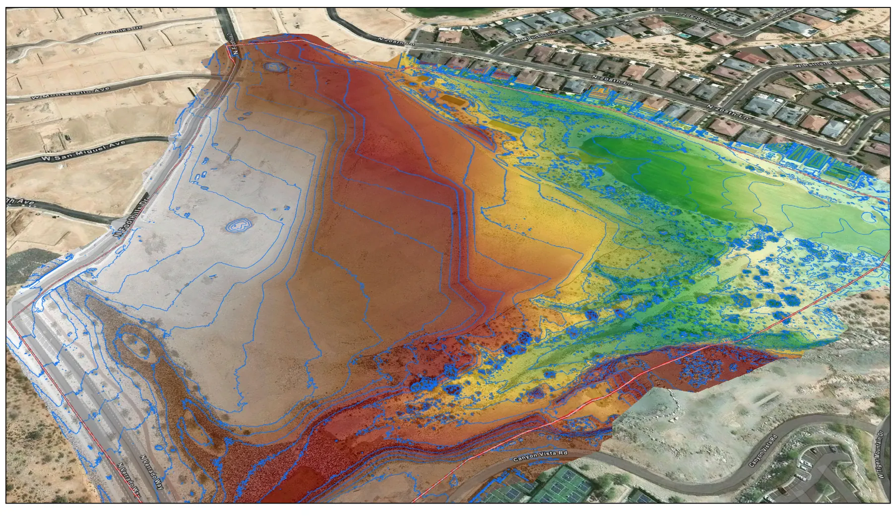
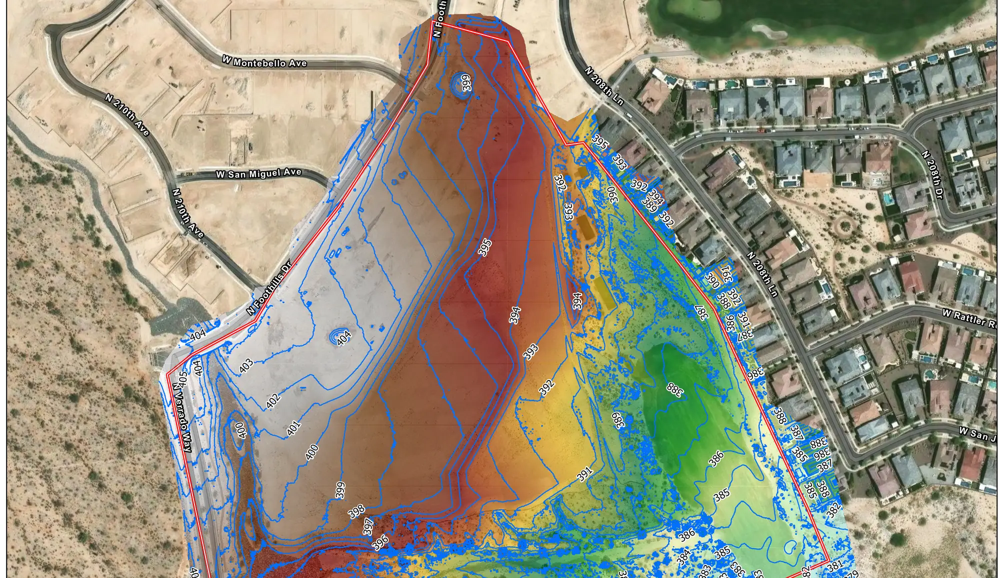
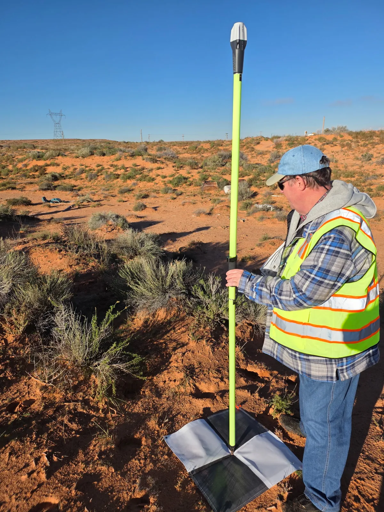

Mapping & GIS · Metro Phoenix and Arizona
Site information your team can measure from.
Orthomosaics, 3D site models, elevation and terrain products, and GIS-ready data, delivered into the systems your people already run, with a written record of how it was positioned.
What arrives
- Orthomosaic imagery at a stated ground sample distance
- Point cloud of the site
- Elevation, terrain and surface models
- Contours and site exhibits
- Textured 3D site model
- GIS-ready layers in the formats your systems already read
- A written record of correction state, reference frame and coverage
What it gets used for
- Planning and design exhibits
- Earthwork volumes and cut and fill between capture dates
- Asset and feature inventories pulled off current imagery
- Base imagery for municipal and county GIS systems
- Public meeting and grant material that needs to be accurate
How it is positioned
Capture is GNSS-positioned and controlled, with RTK/PPK positioning and independent quality-control checks before anything is delivered. The accuracy record ships with the data so whoever receives it can check the work rather than take our word for it.
A geospatial mapping product. Not a substitute for work requiring a licensed professional.



Why it matters
A model that is georeferenced is not the same as a model that is accurate.
Plenty of aerial data looks correct and sits in the right coordinate system while being wrong by an amount nobody has measured. The difference is whether anyone checked, and whether the check travels with the file.
Ours does. Every delivery states the correction state, the reference frame and what was not assessed, so a number pulled off it a year from now can still be defended.
Related
Where this fits.
Need data, not pictures?
Tell us the site and what has to be measured from it. The quote comes back with the deliverable list and the accuracy class written on it.